Learn Chinese · McChinese®
Mandarin from the first character to HSK 6 — around 7,000 words with pinyin and audio, 2,000 example sentences, graded articles, practice tests, four mini-games, pinyin drills and animated stroke order. This page explains every screen in the app and walks you through the things people most often ask about.
Everything is included, and everything is free
No level is locked and nothing is drip-fed. These are the actual counts of what ships inside the app.
| Track | What it covers | Entries |
|---|---|---|
| HSK 1 | Absolute beginner — greetings, numbers, family, basic verbs | 500 words |
| HSK 2 | Elementary — time, places, simple past and future | 772 words |
| HSK 3 | Lower intermediate — opinions, comparisons, daily life | 974 words |
| HSK 4 | Intermediate — work, study, abstract nouns | 1,000 words |
| HSK 5 | Upper intermediate — news, culture, formal register | 1,071 words |
| HSK 6 | Advanced — idioms, literary and written Chinese | 1,149 words |
| Grade 1–6 | Vocabulary from Chinese elementary school that HSK leaves out | 1,530 words |
| Sentences | Example sentences graded by HSK level, each with audio | 1,988 |
| Articles | Graded readings played back sentence by sentence | 33 |
| Test questions | Reading comprehension questions across HSK 1–3 | 309 |
Around 7,000 words in total. If you are studying for the HSK exam, work down the HSK tracks in order. If you just want to speak and read everyday Chinese, mix in the Grade 1–6 list — it covers common words the exam syllabus skips.
A guided tour of the app
The app has five tabs along the bottom — Home, Learn, Listen, Test and Profile. Everything below is reachable in two or three taps from Home.
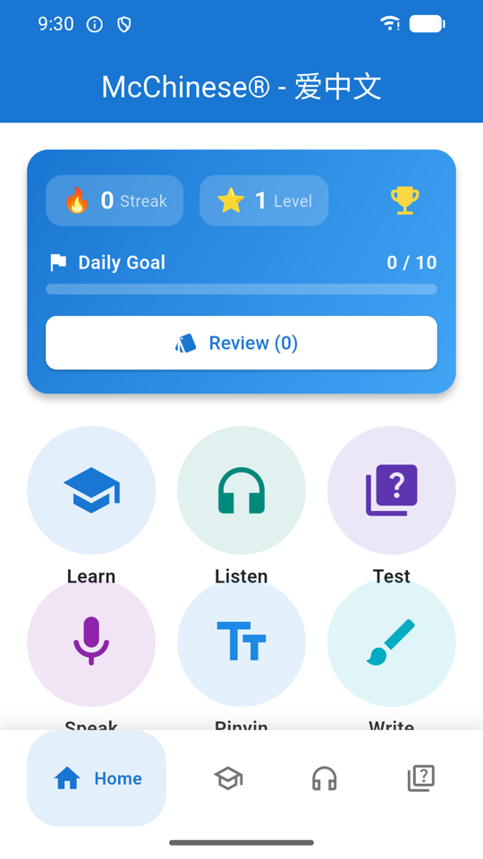
Home
The card at the top tracks your streak, your level and XP, and your daily goal — ten items a day by default. The Review button inside it starts a spaced-repetition session, and the number in brackets tells you how many cards are due right now. Tap the trophy to see your achievements.
Below the card is a grid of round shortcuts: Learn, Listen, Test, Speak, Pinyin, Write, Flash Card, Games and Settings. They are shortcuts to the same places the bottom tabs go, plus the practice tools that do not have a tab of their own.
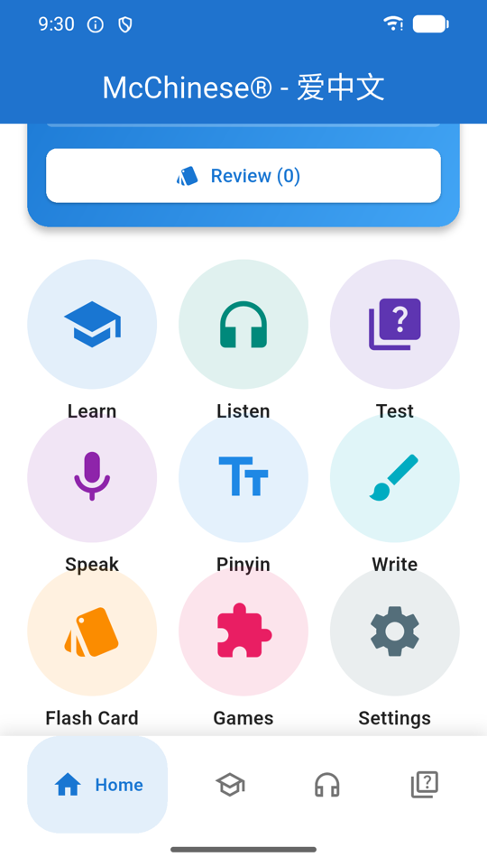
The practice shortcuts
Speak reads a phrase to you and scores your pronunciation against it. Pinyin drills initials, finals and tones separately. Write animates the stroke order of a character and then asks you to trace it. Flash Card is a fast flip-through of a level or of your favorites. Games opens the four mini-games.
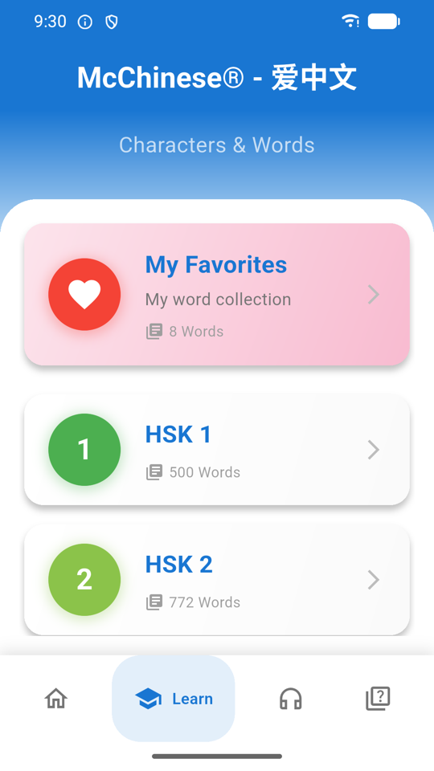
Choosing a level
The Learn tab splits into words (字与词) and sentences (句子与文章). Either way you start here, by picking HSK 1–6 or a Grade 1–6 list. Three extra entries sit at the bottom: My Favorites (everything you have hearted), My Word Collection, and My Teaching — a separate list for anyone using the app to teach someone else.
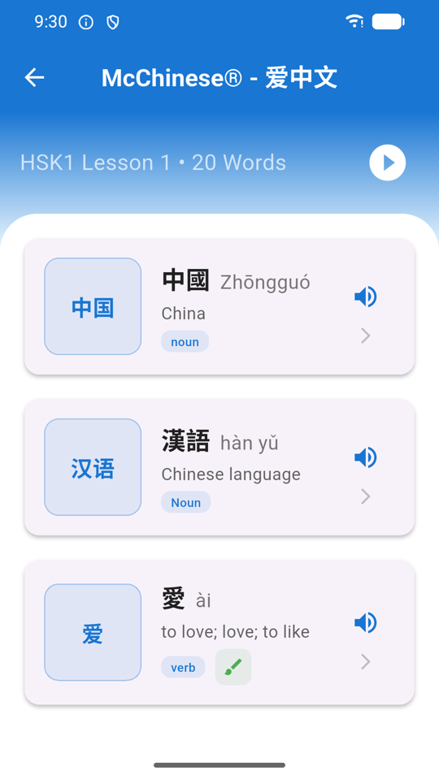
Word list
Every level is chopped into short lessons so you are never staring at a thousand rows. Tap the speaker on a row to hear it without leaving the list, tap the heart to save it to My Favorites, or tap the row itself to open the full word card.
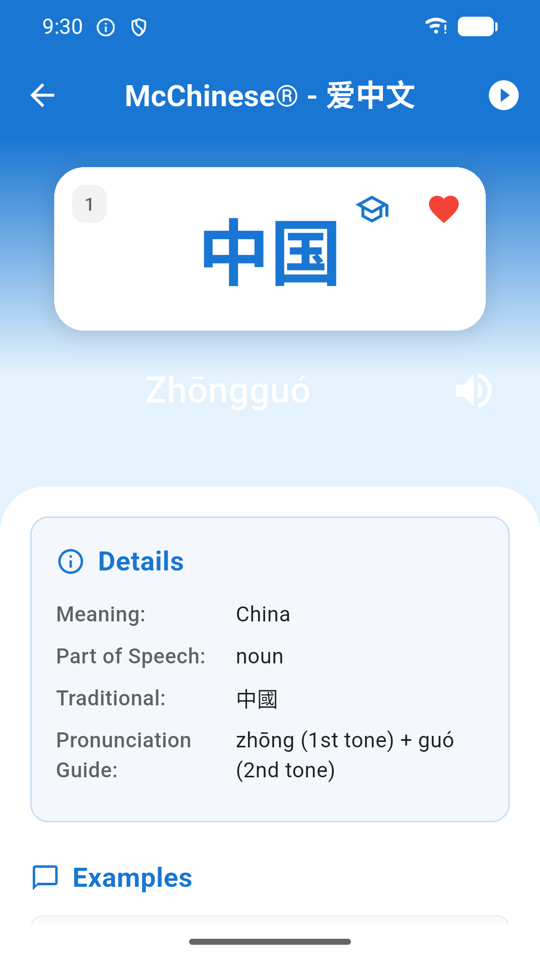
Word card
The character sits on a big card with its pinyin underneath and a speaker button to hear it. The Details panel gives the meaning, part of speech, the traditional form, and a pronunciation guide that breaks the word into syllables and tones — zhōng (1st tone) + guó (2nd tone). Scroll on for example sentences, each with its own audio.
Swipe left and right to move through the lesson without going back to the list. The play button in the top-right auto-advances through the whole lesson hands-free. The heart saves the word; the graduation-cap icon adds it to your teaching list.
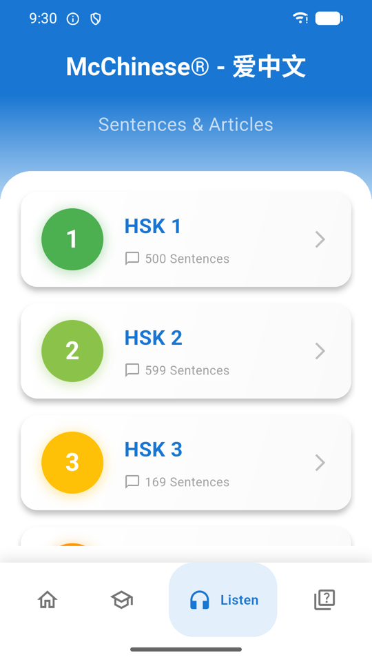
Sentences
Nearly 2,000 example sentences, graded by HSK level and each with audio and a translation. Sentences can be hearted just like words, and they show up under their own My Favorites entry at the top of the level list.
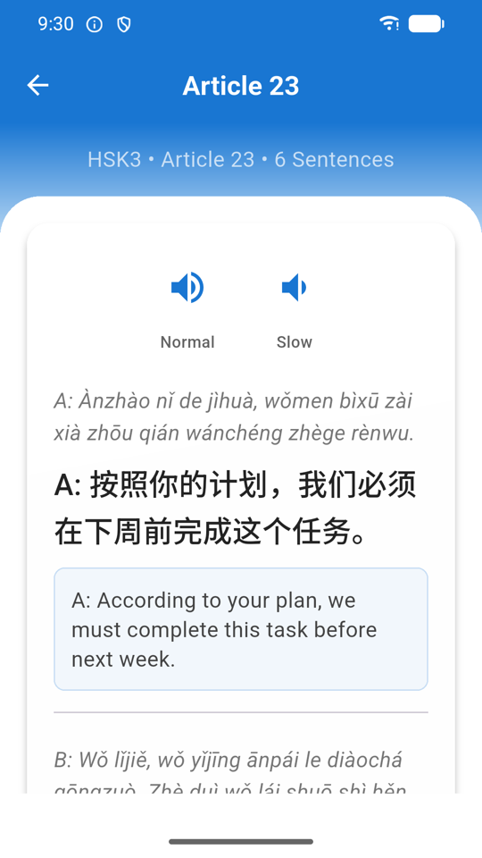
Article reader
Thirty-three graded readings, written to stay inside the vocabulary of their level. Tap any sentence to hear just that sentence, which makes it easy to loop the one line you cannot follow instead of restarting the whole passage.
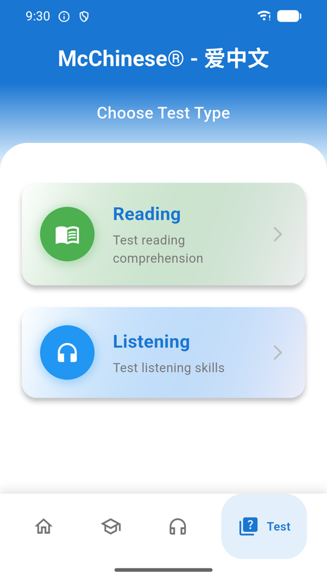
Practice tests
Choose Reading or Listening, then a level, then a specific test. An instructions screen explains the format before you start. Tests are timed and scored, and your result is saved to My Learning Progress in Profile so you can watch a level improve over several attempts.
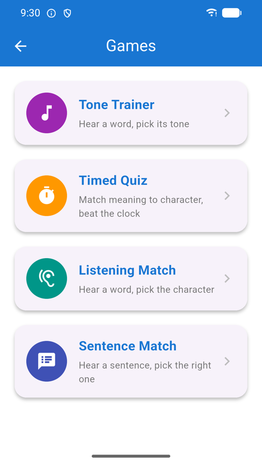
Games
Tone Trainer — hear a word, pick its tone. Timed Quiz — match meaning to character before the clock runs out, with a combo multiplier for streaks. Listening Match — hear a word, pick the character. Sentence Match — hear a sentence, pick it out of four. They pull from the levels you have been studying, so they double as revision.
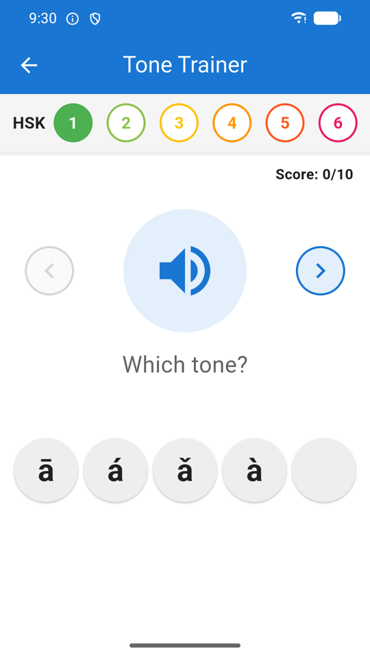
Tone Trainer
Tones are the single hardest thing for most learners, and the only cure is volume. Tone Trainer plays a syllable and asks you to pick first, second, third, fourth or neutral. A few minutes a day here does more for your listening than an hour of reading.
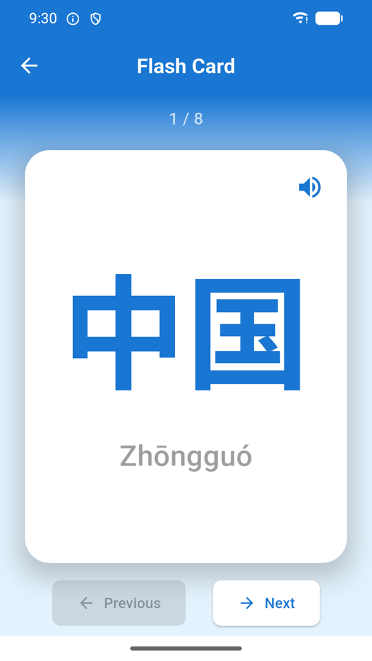
Flash cards
A quick flip-through of a level or of your favorites, with no scoring and no scheduling. Use this when you want to skim a lot of words quickly; use Review on the Home card when you want the app to decide what you actually need to see.
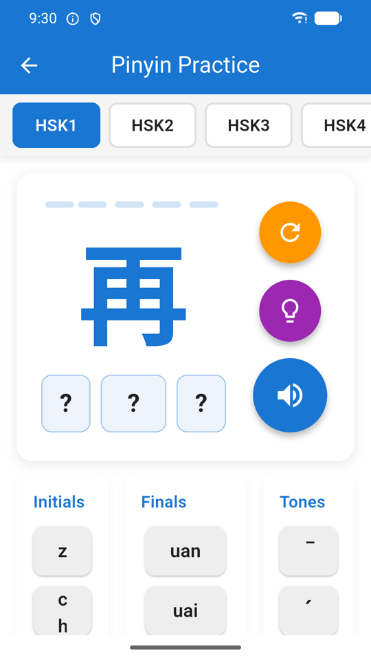
Pinyin practice
Drills the initial (the opening consonant), the final (the rest of the syllable) and the tone separately, so you can find out which of the three is actually letting you down. There is a play-first option in Profile that plays the audio before showing you the answer, which turns this into a listening exercise rather than a reading one.
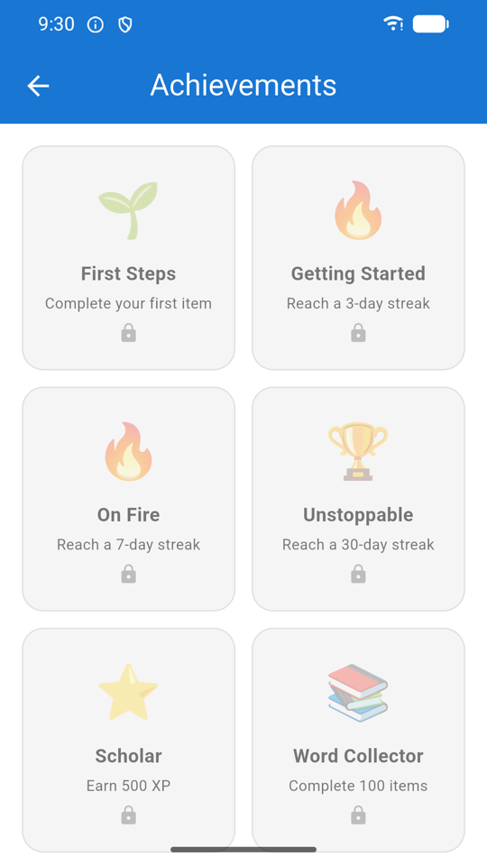
Achievements
Badges unlock as you hit streaks, XP thresholds and study milestones. On a brand-new install they are all locked, exactly as shown here. They exist to give the daily goal something to build towards — nothing in the app is gated behind them.
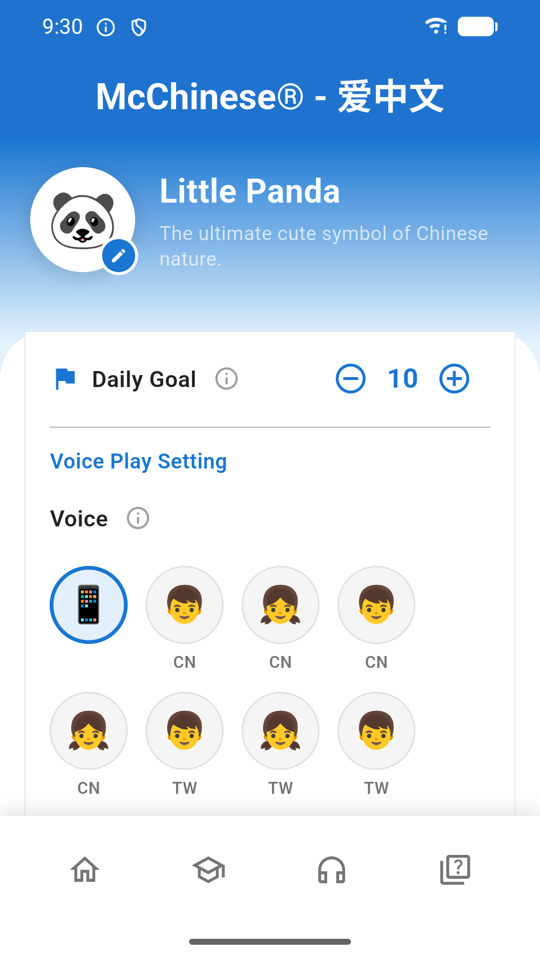
Profile & settings
My Language switches the language your translations appear in — English, Spanish, Japanese, Korean or Vietnamese. My Settings holds the daily goal and the auto-play options. Voice Play Setting lets you choose a specific installed voice and set the playback speed. Further down you will find Content Statistics (how much is in the app), My Learning Progress (your test results), the Remove Ads purchase, and the app version you will need if you ever email us.
Three things worth setting up on day one
Follow these once and the app more or less runs itself afterwards.
Learn your first 20 HSK 1 words
- Open the Learn tab and choose 字与词 (Words).
- Tap HSK 1, then the first lesson.
- Tap the first word to open its card. Listen, read the meaning and the pronunciation guide.
- Tap the heart if it is new to you — this is what feeds your review queue later.
- Swipe left for the next word. Do about twenty, then stop.
- Back on Home, check that your daily goal has moved and your streak has started.
Set up spaced-repetition review
- Heart at least a handful of words — the review pool is built from your favorites.
- On Home, tap Review on the top card. The number beside it is how many cards are due.
- Read the prompt, decide whether you knew it, then flip the card.
- Rate yourself honestly: Again, Hard, Good or Easy.
- The app reschedules each word from that rating — Again brings it straight back, Easy pushes it weeks out.
- Come back tomorrow. Reviewing a small queue daily beats a big session weekly.
Practise writing a character
- From Home, tap Write.
- Pick a character — start with something you already recognise.
- Watch the animation play the stroke order through once.
- Switch to tracing and draw each stroke yourself; the app checks direction and order, not neatness.
- Repeat until you can do it without the guide. Stroke order matters far more than it looks — it is what makes handwriting legible and dictionary lookup possible.
Getting the pronunciation working
By far the most common problem people write to us about, and almost always a two-minute fix.
Learn Chinese does not ship its own recordings. It speaks through the text-to-speech engine built into your phone, which is why the audio is available for every one of the ~7,000 words rather than a hand-recorded few hundred. The catch is that your device needs a Mandarin voice installed.
No sound, or the wrong accent? Your device has no Chinese voice installed yet.
On Android: open Profile and use Open device TTS settings, then make sure
Google Text-to-Speech is the selected engine and install its Chinese voice data. The app will
also offer you a shortcut to install it the first time it notices the voice is missing.
On iOS: go to Settings › Accessibility › Spoken Content › Voices › Chinese
and download a voice, then return to the app.
Once a voice is installed, open Profile → Voice Play Setting. You can pick a specific voice by name if your device has several, and drag the speed slider down — most learners find the default a little fast at first. Pinyin is deliberately read with an English voice, since reading it with a Mandarin voice produces nonsense.
Which version should you use?
The web build is a genuine copy of the app, but a browser cannot do everything a phone can.
| Feature | Web | Android app |
|---|---|---|
| All HSK levels, sentences, articles, tests, games | Yes | Yes |
| Nothing to install | Yes | — |
| Reliable Chinese text-to-speech | Depends entirely on your browser and OS | Yes, using the device voice |
| Microphone / speaking practice | Unreliable in most browsers | Yes |
| Works without a connection | — | Content is stored on the device |
| Remove Ads purchase | — | Yes, one-off |
| Progress survives between visits | Kept in your browser only; clearing site data wipes it | Kept on the device |
Short version: try it on the web, learn on Android.
Common questions
Is Learn Chinese free?
Yes. Every HSK level, sentence, article, test and game is free and unlocked from the start. The app is funded by ads, and there is one optional in-app purchase — Remove Ads — that hides them permanently. Nothing else is paywalled.
Do I need an account?
No. There is no sign-up and no login. Your progress, favorites and settings are stored only on your own device. See the privacy policy for the details.
Does it work offline?
The learning content is stored on your device, so words, sentences, articles, tests and games all work without a connection. Text-to-speech and speech recognition use your device's own engines, which may need a one-time voice download or a connection depending on your phone.
Why can't I hear any Chinese audio?
Your device has no Mandarin voice installed. On Android, install Google Text-to-Speech and add its Chinese voice data — Profile has a shortcut to the device settings. On iOS, go to Settings › Accessibility › Spoken Content › Voices › Chinese and download one. Full steps are in Audio & voices above.
How do I review the words I have saved?
Tap the heart on any word card to add it to My Favorites. Favorites seed the spaced-repetition pool, and the Review button on the Home card starts a session where you rate each card Again, Hard, Good or Easy. The app then reschedules each word based on how well you knew it.
What is the difference between the HSK levels and the Grade 1–6 lists?
HSK 1–6 follows the standard Chinese proficiency test syllabus — use it if you are studying for the exam. The Grade 1–6 lists cover vocabulary Chinese children learn in elementary school, which overlaps with HSK but includes everyday words the exam skips.
Can I change the language the meanings are shown in?
Yes — Profile → My Language. Translations are available in English, Spanish, Japanese, Korean and Vietnamese.
Will I lose my progress if I reinstall?
Yes. Because everything is stored locally and there is no account, uninstalling deletes your progress, favorites and settings. There is currently no cloud backup or sync — worth knowing before you switch phones.
I bought Remove Ads but the ads came back.
Open Profile and tap Restore Purchases. The app also checks with Google Play automatically each time it launches, so make sure you are signed in with the same Google account you bought it on. If it still does not restore, get in touch.
Is the web version the same as the Android app?
Same content, fewer capabilities. The web version is there so you can try the app without installing anything; the Android app adds dependable text-to-speech, microphone practice, offline use and the Remove Ads purchase. See the comparison table above.
Ready to start?
Open it in your browser right now, or install the Android app for offline study and full audio.